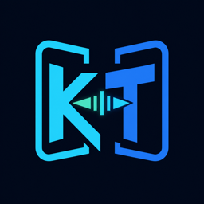
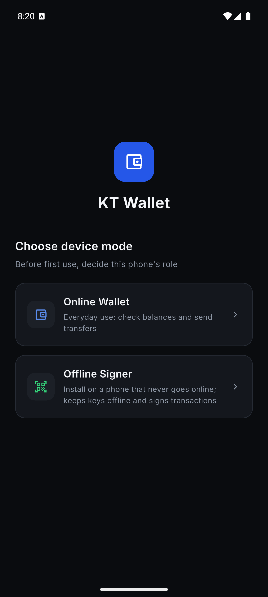
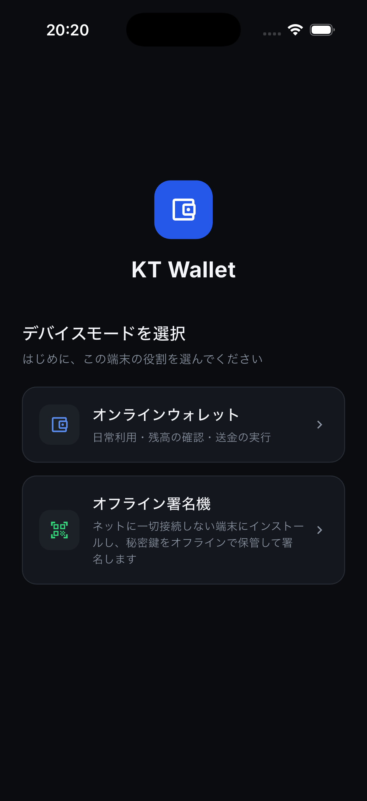
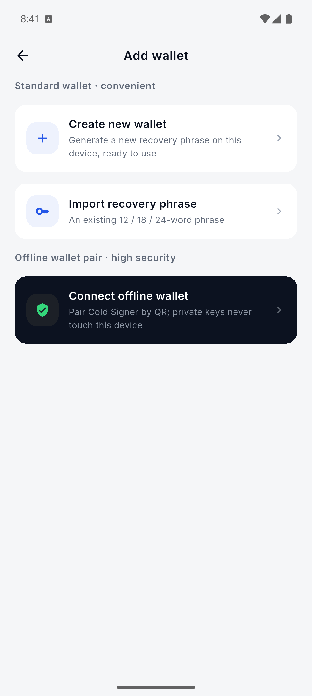
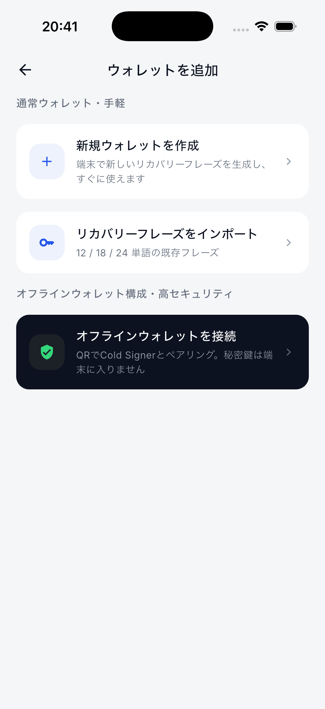
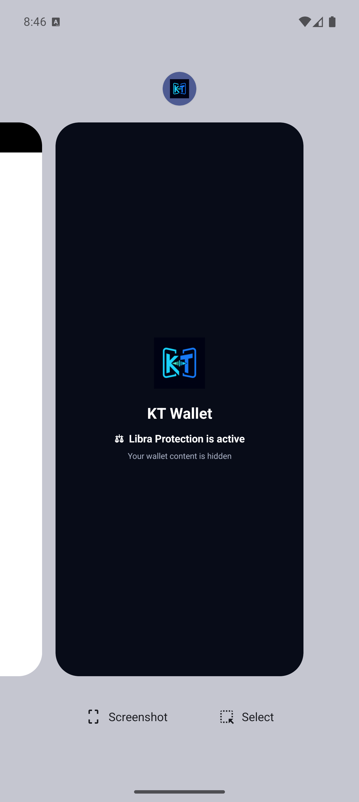
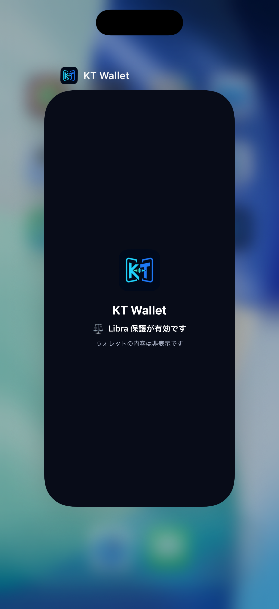
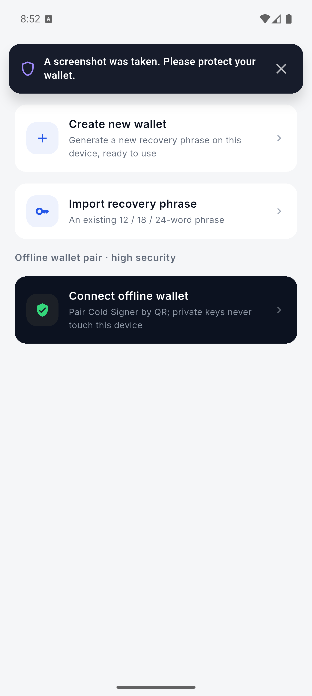
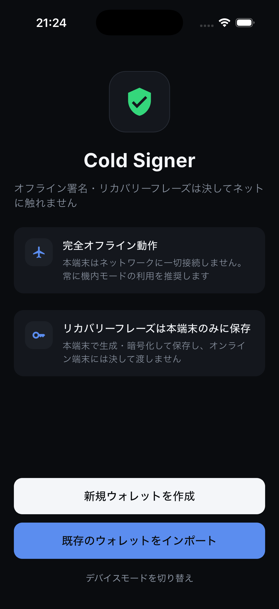

安全加固与离线签名报告
执行结论
核心实现已落地：Cold Signer 的助记词已从 Dart 安全存储迁移到原生加密层；账户导出、真实原始交易解析、原生签名、在线端密码学验签、设备安全检测、每次签名认证、动态手续费与 Pending 状态都已接入生产路径。生产入口不再预置演示钱包，也不会把模拟签名或模拟扫码当成成功。
本轮验证已覆盖：Android 与 iOS 构建、七链解析/验签单测、钱包与签名器全量回归、空钱包首次启动、后台隐私封面、Android 截屏提醒及 Cold Signer FLAG_SECURE。
验收边界：本轮没有重新为七条链各发送一轮“在线端生成 QR → 离线端签名 → 在线端验签 → 广播”的新交易。下方链上哈希是此前同项目热钱包真实测试网广播的永久基线，用于证明网络、余额、原生币和 Token 广播能力；新的离线闭环仍需准备两台设备/双模拟器与测试资产后再做最终链上验收。
P0 / P1 实现状态
| 项目 | 状态 | 已实现与验证范围 |
|---|---|---|
| Cold Signer 原生密钥体系 | 已实现 | 随机 walletId、版本化元数据、原生 Wallet Core 保存/派生/签名；Dart 不持久化完整助记词；删除时清理密钥、PIN、认证与签名记录。 |
| 真实助记词导入 | 已实现 | BIP-39 单词与校验和验证，支持 12/18/24 词、重复导入拒绝、原子持久化和重启恢复。 |
| 账户导出与在线配对 | 已实现 | Ethereum、Polygon、Base、Arbitrum、Avalanche、TRON、Solana 的地址、公钥、派生路径与协议版本；在线端验证地址与公钥关系、拒绝重复或异常载荷。 |
| 真实离线签名 | 已实现 | EVM EIP-1559、TRON protobuf、Solana legacy message；原生币、ERC-20、TRC-20、SPL Token；确认页仅展示从原始交易解析出的字段。 |
| 在线端密码学验签 | 已实现 | EVM 恢复 signer 并核对 chainId/nonce/字段；TRON 核对 raw_data、签名和 txHash；Solana 核对 ed25519、fee payer 与 message。篡改数据失败闭合。 |
| 设备安全检测 | 已实现 | safe / unsafe / unknown；密码、生物识别、联网、录屏、root/jailbreak best-effort 检测；无法确认不冒充安全，unsafe 阻止签名。 |
| 签名器认证设置 | 已实现 | 生物识别可用性验证、持久化开关、旧 PIN/生物识别验证、错误退避与重启锁定、每次签名强制认证。 |
| 后台隐私保护 | 模拟器通过 | Android API 33+ 禁止系统 Recents 截图并显示品牌封面；iOS Scene 生命周期覆盖 App Switcher；恢复时移除保护层。 |
| 动态手续费与预执行 | 已实现 | EVM estimateGas + feeHistory；TRON bandwidth/energy/feeLimit；Solana blockhash/feeForMessage/simulation。估算失败不使用静态演示费。 |
| Pending 状态管理 | 基础完成 | submitted/pending/confirmed/failed/dropped 持久化、重启续查、历史合并；EVM nonce 冲突检测、加速和取消尚未完成。 |
| 生产路径去演示化 | 已实现 | Release 禁止模拟扫码/签名/成功交易，mock crypto 仅允许 debug + 显式测试开关；演示数据只留在测试与屏幕库。 |
| 发布合规基础 | 代码材料完成 | package MPL-2.0 notice、iOS Privacy Manifest、隐私政策、安全风险说明、第三方许可与权限文案已补充。 |
自动化与构建结果
| 模块 | 结果 | 重点覆盖 |
|---|---|---|
packages/chains | 132 passed | 七链 RPC、地址、原始交易解析、EVM/TRON/Solana 真实密码学验签与篡改拒绝。 |
apps/kt_wallet | 331 passed | 在线钱包、配对、转账参数、广播、Pending、App Lock、空钱包启动与生产路由。 |
apps/cold_signer | 104 passed | 助记词、PIN、生物识别、原生 vault、导出、解析、认证、签名记录与安全检查。 |
packages/airgap_protocol | 59 passed | AccountExport、请求/响应 payload、版本、过期、重复与异常载荷。 |
packages/core_crypto | 33 passed | 原生 API 类型、method channel、密钥生命周期与签名返回。 |
packages/wallet_data | 21 passed | 交易状态持久化与数据迁移。 |
packages/ui_kit | 13 passed | 截屏横幅显示、自动消失、关闭、连续重计时、后台排队和多语言。 |
| Android debug | 构建/安装通过 | API 35 模拟器，组合 App 使用真实 Wallet Core；Cold Signer 保持 FLAG_SECURE。 |
| iOS debug | 构建/启动通过 | KT Wallet 组合 App 与独立 Cold Signer Simulator 构建通过，Scene 隐私保护可见。 |
flutter analyze | 0 issues | 全工作区静态分析通过。 |
运行时发现并修复的问题
空钱包首次启动崩溃
清空模拟器数据后，生产模式没有演示钱包，首页旧逻辑仍对当前钱包做非空断言。
已修复 空钱包直接进入“添加钱包”，App Lock 只在真实钱包存在时生效；补充回归测试防止再次出现。
Android 最近任务暴露页面
仅在 onPause 添加保护视图仍存在系统快照竞态，偶发捕获 Flutter 原页面。
已修复 API 33+ 同时使用 setRecentsScreenshotEnabled(false) 和品牌保护视图，API 35 实测任务卡仅显示保护页。
双端截图证据








七链真实测试网广播基线
| 测试网 | 原生币交易 | Token 交易 |
|---|---|---|
| Ethereum Sepolia | ETH · 0xee6b…e3b8 | Test USDT · 0x8523…749b |
| Polygon Amoy | POL · 0x7bbb…20fb | USDC · 0x4ab2…8041 |
| Base Sepolia | ETH · 0x619c…148f | USDC · 0x898e…0648 |
| Arbitrum Sepolia | ETH · 0xc8af…1fa0 | USDC · 0xd4ad…8d76 |
| Avalanche Fuji | AVAX · 0x7b34…04bb | USDC · 0xc683…c626 |
| TRON Nile | TRX · e567…5b6a | USDT · 8948…df29 |
| Solana Devnet | SOL · XEN8…wKtH | USDC · 23a1…yszU |
尚需完成的最终验收
需要真实设备/资产
- 为七链重新准备测试币和 Token，逐链执行完整的双设备离线 QR 广播闭环并生成新的 txHash。
- iOS 真机验证系统截屏通知。Simulator 的 “Save Screen” 与
simctl screenshot不触发userDidTakeScreenshotNotification，因此本轮只能验证原生监听代码和横幅组件。 - iOS 真机覆盖控制中心、电话遮挡、Home、锁屏和 App Switcher，并观察恢复时是否存在单帧敏感内容。
- root/jailbreak、真实录屏和设备完整性失败场景需在对应实体设备上验证失败闭合。
明确尚未实现
- EVM Pending 交易的加速与取消，以及完整 nonce 冲突交互。
- Solana SPL Token 收款方不存在 ATA 时自动创建 ATA；当前会安全拒绝并提示先建立 Token Account。
- 用户已排除的原生端 CI、正式发布签名、WalletConnect/DApp、NFT、Swap、质押。
安全判定原则
签名成功不等于广播或确认成功
App 分开记录 signed、submitted、pending、confirmed、failed、dropped。只有链上回执达到确认条件才显示确认成功。
无法检测不等于安全
原生能力不可用或权限不足时状态为 unknown；签名确认页不会用默认绿色“安全”代替真实检测结果。
Android Cold Signer 不为截屏提醒降低保护
FLAG_SECURE 优先阻止截屏，因此不会有“成功截屏”事件；黑色截图是预期安全行为。